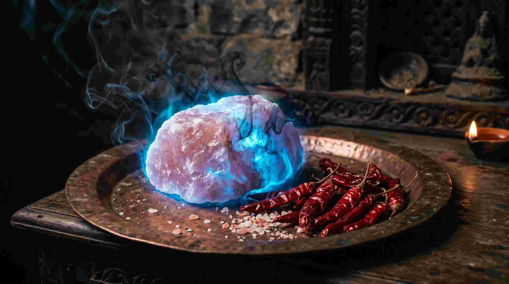

भारत में शायद ही कोई ऐसा घर होगा जहाँ 'नज़र उतारने' की परंपरा न हो। जब किसी स्वस्थ बच्चे को अचानक उल्टियां होने लगें, व्यापार चलते-चलते ठप्प हो जाए, या घर में बिना बात के भयंकर क्लेश होने लगे, तो दादी-नानी अक्सर कहती हैं कि "किसी की बुरी नज़र लग गई है।"
आधुनिक विज्ञान और তথाकथित पढ़े-लिखे लोग अक्सर इसका मज़ाक उड़ाते हैं। लेकिन एक मेडिकल छात्र (MBBS) और वैदिक ज्योतिषी होने के नाते, मैं आपसे कहता हूँ कि नज़र लगना कोई अंधविश्वास नहीं है। यह पूरी तरह से क्वांटम भौतिकी (Quantum Physics) और आपके शरीर के बायो-मैग्नेटिज्म (Bio-Magnetism) का खेल है। आइए समझते हैं कि कैसे किसी दूसरे इंसान की 'जलन' (Jealousy) आपको शारीरिक और मानसिक रूप से बीमार कर सकती है।
"आंखें केवल देखने का यंत्र नहीं हैं; वे मस्तिष्क (Brain) का ही बाहरी विस्तार हैं। जब कोई व्यक्ति तीव्र ईर्ष्या से आपको देखता है, तो उसके मस्तिष्क से निकलने वाली इलेक्ट्रोमैग्नेटिक 'लेज़र' आपके ऊर्जा-कवच (Aura) को भेद देती है।"
1. 'ऑरा' (Aura) और बायो-मैग्नेटिक फील्ड क्या है?
मशहूर अमेरिकी शोध संस्थान HeartMath Institute के अनुसार, मानव हृदय (Human Heart) मस्तिष्क की तुलना में 5000 गुना अधिक शक्तिशाली इलेक्ट्रोमैग्नेटिक फील्ड (Electromagnetic Field) उत्पन्न करता है। यह फील्ड हमारे शरीर के चारों ओर एक अदृश्य अंडे के आकार की ढाल (Torus field) बनाता है, जिसे वैदिक भाषा में 'आभा मंडल' (Aura) कहा जाता है।
जब आप खुश और स्वस्थ होते हैं, तो आपका ऑरा बहुत मजबूत और विस्तृत (3 से 8 फीट तक) होता है। यह ऑरा बाहरी नकारात्मक ऊर्जाओं (Negative frequencies) को आपके शरीर में घुसने से रोकता है।
2. बुरी नज़र (Evil Eye) का विज्ञान: यह काम कैसे करती है?
वैज्ञानिक रूप से, इंसान का मस्तिष्क लगातार 'ब्रेनवेव्स' (Brainwaves) छोड़ता है। जब कोई व्यक्ति आपसे ईर्ष्या (Jealousy), घृणा (Hatred) या अत्यधिक लालच के साथ आपको या आपकी सफलता को देखता है, तो उसके मस्तिष्क में तीव्र और डार्क 'हाई-बीटा' (High-Beta) या 'गामा' (Gamma) तरंगे उत्पन्न होती हैं।
ये तरंगे उसकी आंखों के माध्यम से (जिन्हें Bio-photons कहते हैं) एक 'फोकस्ड लेज़र बीम' की तरह सीधे आपके ऑरा से टकराती हैं। यदि आपका ऑरा कमजोर है (थकान, तनाव या खराब ग्रह दशा के कारण), तो यह लेज़र आपके ऑरा को 'छेद' (Breach) देती है।
नज़र लगने के वैज्ञानिक और शारीरिक लक्षण:
- अचानक भारी जम्हाई आना (Sudden Yawning): जब किसी की नकारात्मक ऊर्जा आपके फील्ड में आती है, तो आपके शरीर का ऑक्सीजन लेवल अचानक गिर जाता है। मस्तिष्क इसे बैलेंस करने के लिए बार-बार जम्हाई लेने पर मजबूर करता है।
- बिना कारण अत्यधिक थकान (Unexplained Fatigue): आपको ऐसा लगेगा जैसे किसी ने आपकी पूरी बैटरी निकाल ली हो। (यह ऑरा के डैमेज होने और ऊर्जा के लीक होने का संकेत है)।
- बच्चों का अचानक रोना या दूध न पीना: बच्चों का ऑरा बहुत कोमल (Porous) होता है। जब कोई 'ईर्ष्यालु' व्यक्ति उन्हें देखता है, तो उनका नर्वस सिस्टम शॉक में चला जाता है (Vagus Nerve disruption), जिससे उन्हें उल्टी या दस्त हो सकते हैं।
- उपकरणों का अचानक खराब होना: भारी इलेक्ट्रोमैग्नेटिक डिस्टर्बेंस के कारण अक्सर घर के कांच के बर्तन, बल्ब या मोबाइल फोन अचानक टूट या खराब हो जाते हैं।
3. नज़र उतारने के वैदिक उपायों का 'केमिकल' और 'क्वांटम' विज्ञान
हमारे पूर्वजों ने नज़र उतारने के जो उपाय बनाए थे, वे कोई जादू-टोना नहीं, बल्कि विशुद्ध रसायन विज्ञान (Chemistry) और भौतिकी (Physics) हैं। आइए उनके पीछे का विज्ञान समझते हैं:

A. नमक और फिटकरी (Rock Salt & Alum) का विज्ञान
दादी-नानी अक्सर मुट्ठी में सेंधा नमक (Rock Salt) या फिटकरी लेकर सिर के चारों ओर घुमाती हैं और फिर उसे पानी में बहा देती हैं या आग में डाल देती हैं।
विज्ञान: नमक एक 'क्रिस्टल' (Crystal) है। क्रिस्टल्स में इलेक्ट्रोमैग्नेटिक रेडिएशन को सोखने (Absorb) की अद्भुत क्षमता होती है। जब नमक को शरीर के चारों ओर (ऑरा में) घुमाया जाता है, तो वह उन सभी नकारात्मक 'आयनों' (Negative Ions) को अपनी क्रिस्टलीय संरचना में सोख लेता है। पानी में बहाने से वह ऊर्जा अर्थ (Earthing/Grounded) हो जाती है।
B. राई और सूखी लाल मिर्च (Mustard Seeds & Red Chillies)
राई और लाल मिर्च को सिर से उसार कर आग में जलाया जाता है।
विज्ञान: जब राई और लाल मिर्च जलती हैं, तो उनसे कैप्साइसिन (Capsaicin) और सल्फर के यौगिक (Compounds) निकलते हैं। यह धुआं वातावरण में मौजूद भारी और स्थिर इलेक्ट्रोमैग्नेटिक क्लटर्स (Stagnant energy) को रासायनिक रूप से तोड़ देता है। (अगर मिर्च जलने पर धांस/खांसी न आए, तो इसका मतलब है कि कैप्साइसिन ने हवा में मौजूद भारी 'नेगेटिव ऊर्जा' को नष्ट करने में खुद को खपा दिया)।
C. बच्चों को 'काला टीका' लगाना (Carbon Absorption)
विज्ञान: काला रंग (काजल/कार्बन) प्रकाश और ऊर्जा के स्पेक्ट्रम (Spectrum) का सबसे बड़ा अवशोषक (Absorber) है। जब कोई बुरी नीयत से बच्चे को देखता है, तो काला टीका उस 'फोकस्ड एनर्जी बीम' को अपनी ओर खींच कर सोख लेता है, जिससे बच्चे का 'ऑरा' सुरक्षित रहता है।
4. अपनी ऑरा (Aura) को 'अभेद्य' (Bulletproof) कैसे बनाएं?
दूसरों की आंखों पर पट्टी नहीं बांधी जा सकती, लेकिन आप अपने बायो-मैग्नेटिक फील्ड को इतना मजबूत कर सकते हैं कि कोई भी नज़र आपको छू न सके। इसके 3 अचूक उपाय हैं:
- ध्वनि विज्ञान (Acoustic Shielding): घर से निकलने से पहले हनुमान चालीसा, नारायण कवच या भैरव मंत्र का पाठ करें। इन मंत्रों के बीजाक्षर (Syllables) आपके शरीर के चारों ओर एक उच्च-आवृत्ति (High-frequency) वाला सोनिक शील्ड (Sonic Shield) बना देते हैं जिसे कोई भी नीची आवृत्ति (जलन/घृणा) भेद नहीं सकती।
- नमक के पानी से स्नान (Salt Water Bath): हफ्ते में दो बार नहाने के पानी में एक चम्मच समुद्री नमक (Sea Salt) डालें। यह आपके ऑरा में चिपके हुए सारे 'साइको-मैग्नेटिक डस्ट' (Psycho-magnetic dust) को धो देता है।
- अपनी सफलताओं को गुप्त रखें (The Law of Silence): अपनी सैलरी, अपनी अगली ट्रिप, और अपनी उपलब्धियों को सोशल मीडिया पर हर किसी को दिखाने से बचें। जितनी ज्यादा आंखें (Focus) आपकी तरफ होंगी, आपके ऑरा पर उतना ही ज्यादा 'इलेक्ट्रोमैग्नेटिक प्रेशर' पड़ेगा। वैदिक शास्त्रों का नियम है— "गुप्तं धनं, गुप्तं ध्यानं" (धन और ध्यान हमेशा गुप्त रखना चाहिए)।
निष्कर्ष: अंधविश्वास नहीं, ऊर्जा का बचाव करें
बुरी नज़र कोई भूत-प्रेत की कहानी नहीं है; यह एक इंसान से दूसरे इंसान में ट्रांसफर होने वाली नेगेटिव क्वांटम ऊर्जा (Negative Quantum Energy) है। जब आप विज्ञान और अध्यात्म दोनों को समझ लेते हैं, तो आप डरते नहीं हैं, बल्कि जागरूक (Aware) हो जाते हैं।
अपनी ऊर्जा को सुरक्षित रखें, क्योंकि आपकी ऊर्जा ही आपकी सबसे बड़ी संपत्ति है। दूसरों की ईर्ष्या को अपनी तरक्की की राह में रोड़ा न बनने दें। अपने ऑरा को शुद्ध करें और निर्भय होकर जीवन जिएं!